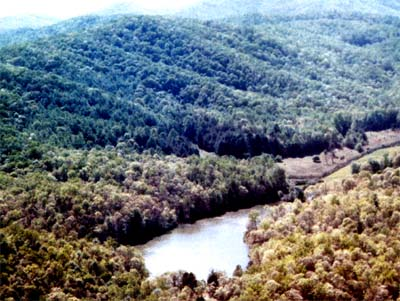
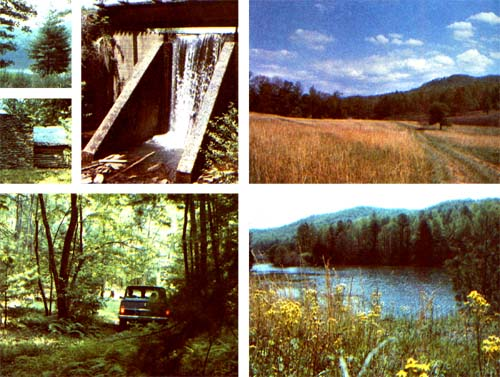

Yep! After years of scrimping and saving every penny (many of which came from MOTHER's Lifetime Subscribers), THE Mother Earth News© has finally purchased 622.4 acres of beautiful mountains and valleys and streams and lakes and clearings and shady groves and ferny dells and pastures and woodlands and old log cabins not very far from her home offices in Hendersonville, North Carolina.
The photographs across the top of these two pages will give you a small idea of the incredible variety of elevations (running from 2,080 to 2,720 feet above sea level), soil, native flora and fauna, etc., that you'll find on this nearly-mile-square piece of property.
And if you've been reading this magazine any length of time at all, you've probably already got an inkling of the .passively solar-heated underground :dwellings, biodynamic gardens, self-contained hydroelectric systems, windplants, and other environmentally oriented installations that we'll soon be making on MOTHER's land.
The idea, in short, is to tap the best and most inventive minds of the world (many of whom you've already seen featured in this magazine's pages) to construct a showplace "Community of the Future": a food self-sufficient, energy self-sufficient village that "rests lightly" on the surrounding countryside . . . a delightful place in which to live, filled with inhabitants who couldn't care less if the Arabs shut off the oil, the coal miners go on strike, or the nation's truckers refuse to haul food across state lines.
Or, to put it another way: We (and you) already know that $100,000 homes can be constructed for $20,000 . . . and that once you move into such a dwelling, the house can be heated and cooled forevermore for no more than $15 or $20 a year. And that it's extremely fulfilling (rather than a chore) to grow far more healthful food for your family yourself than any supermarket will ever sell. And that it's better (and easier) to set up your own home business than to punch a time clock. And that communities-once again-can be designed and built for people, instead of cars. And we (and you) know many other related things . . . if, for no other reason, than that we've all read about them in this magazine.
But just publishing a story about a passively solar-heated house here . . . and a successful home business there ... and a new wholistic gardening breakthrough somewhere else . . . isn't good enough anymore. If we ever hope to rub this society's nose in the fact that life can be different, and better, and more environmentally oriented, and more satisfying in the bargain . . . we're just going to have to bring all of these good things together in one spot at the same time for everyone to see firsthand.
And that's exactly what MOTHER's Community of the Future is all about. And we're well on our way to making it a reality. And we expect to keep right on financing this work very largely the same way we've been financing it in the past: with the revenues we receive from the sale of Lifetime Subscriptions to this magazine.
So if you've ever thought about signing up for a lifetime of THE Mother Earth News°, this is the time to do it (just as 3,063 other good people-see page 12 of this issue-have already done).
Your investment ($300 for U.S. subscribers, $350 Canadian and foreign), remember, does three things: [1] It makes it just that much easier for us to keep publishing still bigger and better MOTHERS, [2] it assures you of receiving everyone of those issues that you're entitled to for as long as there is a MOTHER (forever, we hope!), and [3] it helps us finance the Environmental Research Center that we're already starting to build on the lovely piece of land you see above.
That's really stretching today's shrinking dollar and, in return for your non-refundable contribution, you will receive [1] every issue of MOTHER that is printed for as long as you live, [2] recognition-unless you request otherwise-in this magazine, [3] a genuine Certificate of Thanks, [4] your name-unless you request otherwise-listed permanently at the Center as one of The People Who Made This Research Center Possible, and [5] the satisfaction of becoming part of, we hope, Something That Counts.
ONE FINAL NOTE: Inflation, as you know, is really starting to get out of hand here in the United States (and in other parts of the world) and all signs point to even worse inflation in the years ahead. For that reason, the price of a lifetime subscription to THE Mother Earth News (restricted) will be raised to $500 for U.S. subscribers and $600 for subscribers in Canada and all foreign countries as of January 1, 1979.
This, then, is the last time you'll ever have a chance to take advantage of the current bargain price for yourself or for anyone that you want to give the "best possible" Christmas present to this year. Better hurry if you want to get in while the old rates are still good!
Just fill out the handy, pre-addressed order envelope that should be bound right in between these two pages, slip in your check, seal, and drop the form in the mail. Or address your own envelope to THE Mother Earth News, P.O. Box 70, Hendersonville, North Carolina 28739. Either way . . . welcome aboard MOTHER's Grand Adventure! And thanks for taking part!
|
 |
 |
|